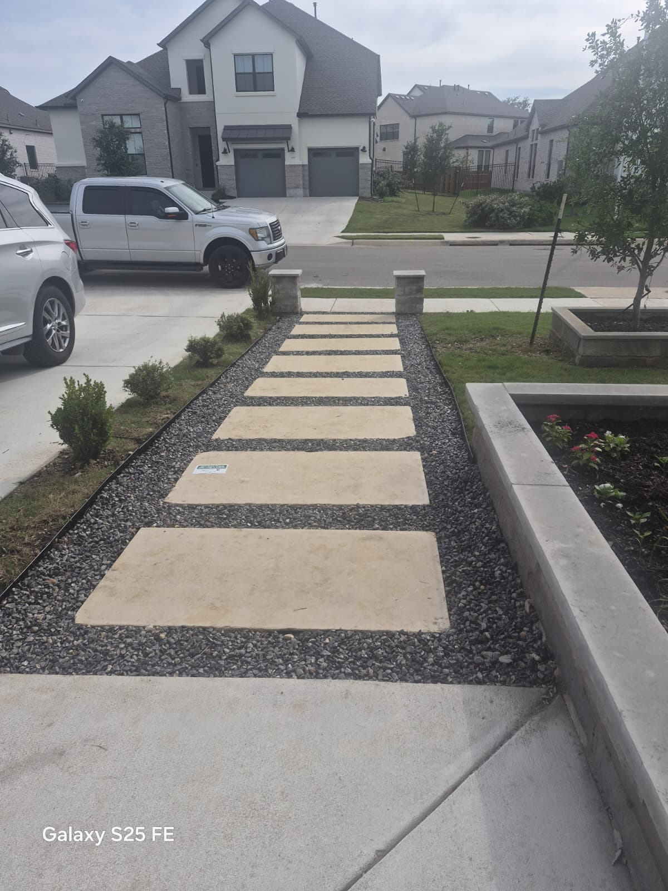
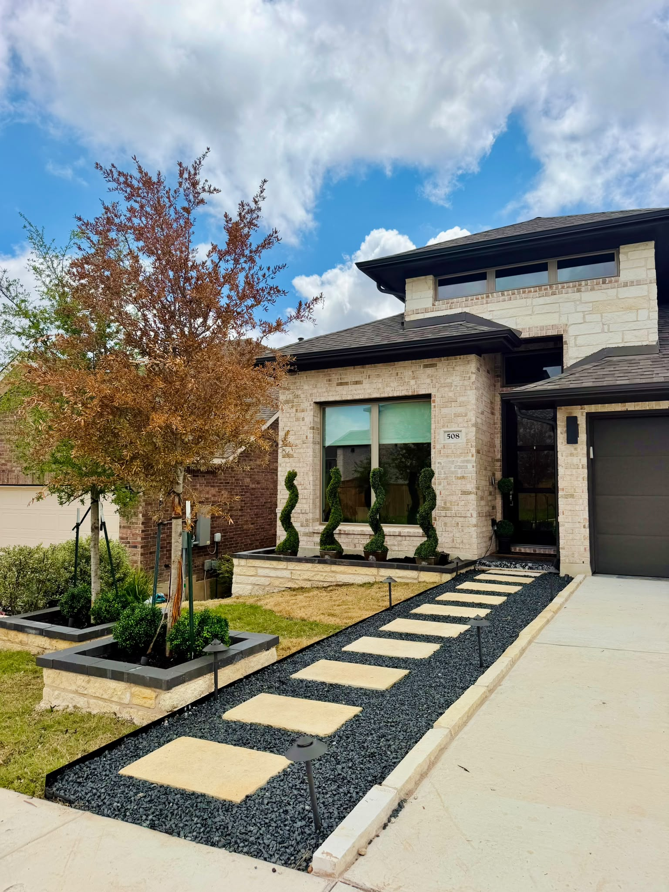
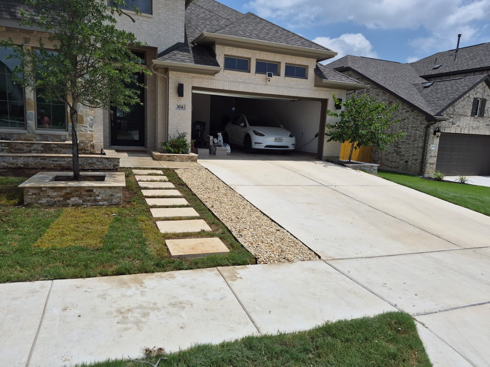
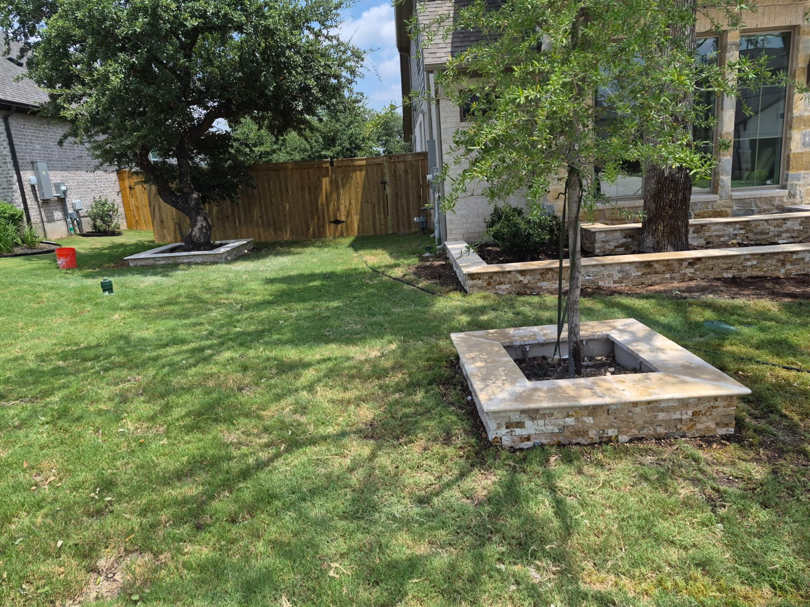
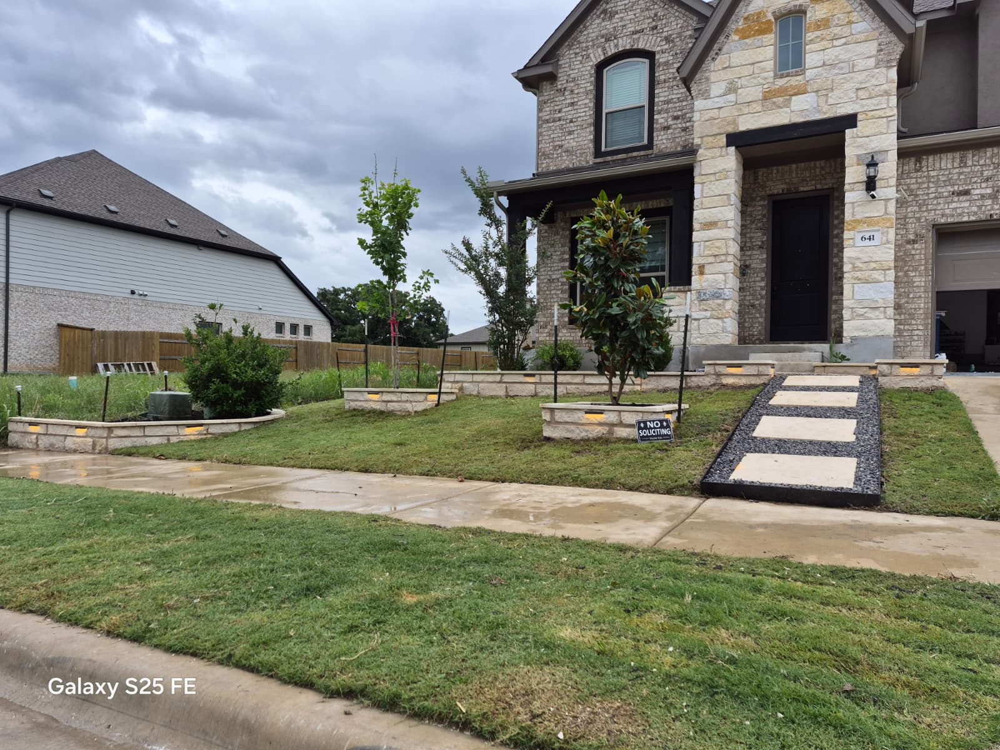
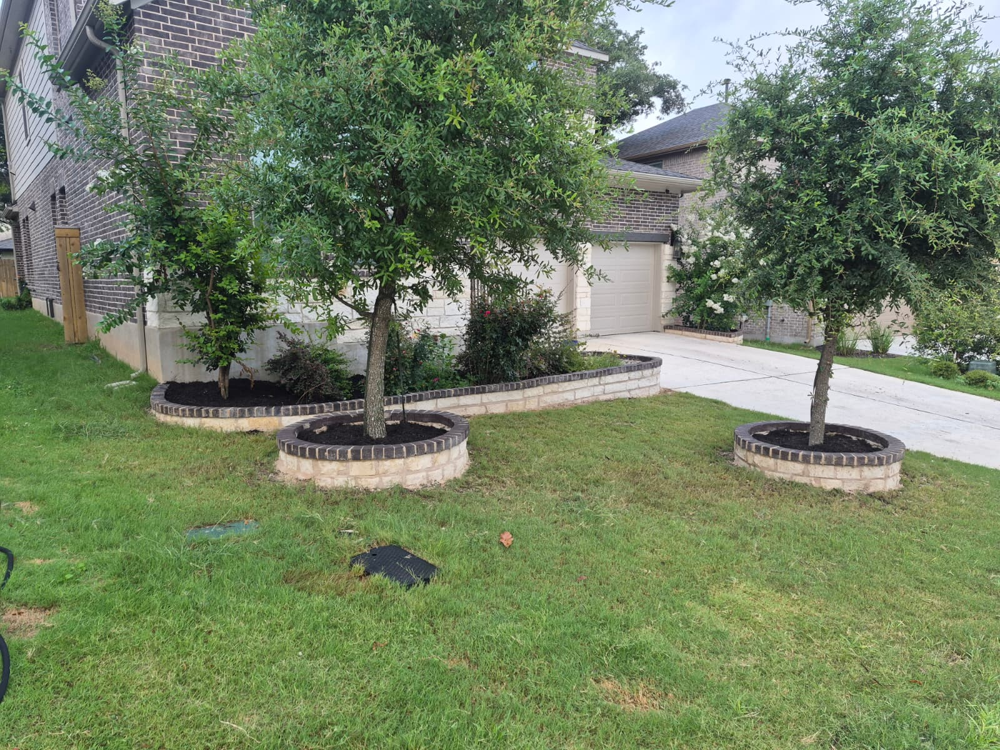

Nuestras Especialidades
Trabajos profesionales garantizados en construcción de exteriores.
Caminos de Piedra
Instalación experta de senderos, pasillos y entradas con piedra natural o adoquines resistentes al tráfico y clima.
Jardineras de Piedra
Construcción de muros de contención decorativos y jardineras elevadas para darle un diseño limpio y moderno a tu jardín.
Paisajismo Completo
Colocación de mantillo (mulch), plantas ornamentales y nivelación de terrenos que hacen resaltar tus estructuras de piedra.
Galería de Trabajos
Fotos de proyectos y acabados en piedra (Próximamente fotos de tus trabajos reales).






Contacto y Presupuestos
¿Listo para transformar tu patio? ¡Escríbenos u obtén información de inmediato!
Teléfono
Horario de Atención
Lunes a Sábado: 7:00 AM - 6:00 PM